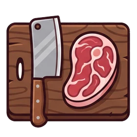

Sucursal San Fernando desde 1997
Av. Bernardo O’Higgins 700
Lunes a viernes09:15 – 13:30 / 15:00 – 18:30
Sábado09:15 – 18:00 continuado
DomingoCerrado
Carnicería familiar · Región de O’Higgins
Somos SUCARNE: dos locales atendidos por su gente, en San Fernando y en Rancagua. Acá está dónde encontrarnos, a qué hora abrimos y cómo comprar sin hacer la fila.
Los dos locales trabajan igual y con los mismos cortes. Elige el que te queda más cerca.
Av. Bernardo O’Higgins 700
Av. Libertador Gral. Bernardo O’Higgins 1001
De acá sale la venta en ruta.
Venta en ruta desde Rancagua. Salimos a repartir por sector. Pregúntanos por WhatsApp si llegamos al tuyo.
Tres cosas que en el supermercado no te van a hacer.
Nos escribes por WhatsApp con lo que necesitas, lo preparamos y lo pasas a buscar. Sin esperar en el mostrador.

Del grosor que quieras, deshuesado, en cubos para anticuchos o la pieza entera. Tú dices y nosotros lo dejamos así.
Dinos para cuántos son y qué vas a cocinar, y te decimos qué corte llevar y cuánto. Ahí está la gracia de comprar en carnicería y no en góndola.
Lo que más nos consultan, contestado de una vez.
Sí, y es la forma más cómoda de comprar con nosotros. Escríbenos por WhatsApp a la sucursal que te queda, dinos qué llevas y a qué hora pasas, y lo dejamos preparado. Para el 18 y para fin de semana largo conviene avisar con días.
Sí. Del grosor que quieras, deshuesado, en cubos para anticuchos o la pieza entera. Si no sabes cómo pedirlo, dinos qué vas a cocinar y nosotros te decimos cómo conviene cortarlo.
No. Los dos locales cierran domingo. El sábado San Fernando atiende de 09:15 a 18:00 continuado y Rancagua de 08:30 a 14:00 continuado.
Efectivo, débito, crédito y tarjetas de prepago, en las dos sucursales.
Desde Rancagua salimos con venta en ruta. Si necesitas que te lleguemos a ti, pregúntanos por WhatsApp y te decimos si alcanzamos a tu sector y qué día pasamos.
Como referencia, 400 a 500 g de carne por adulto y la mitad por niño. Para no sacar la cuenta a mano, la calculadora de la portada te lo dice y te arma el pedido por WhatsApp; y si la duda es qué corte llevar, está la guía de 26 cortes.